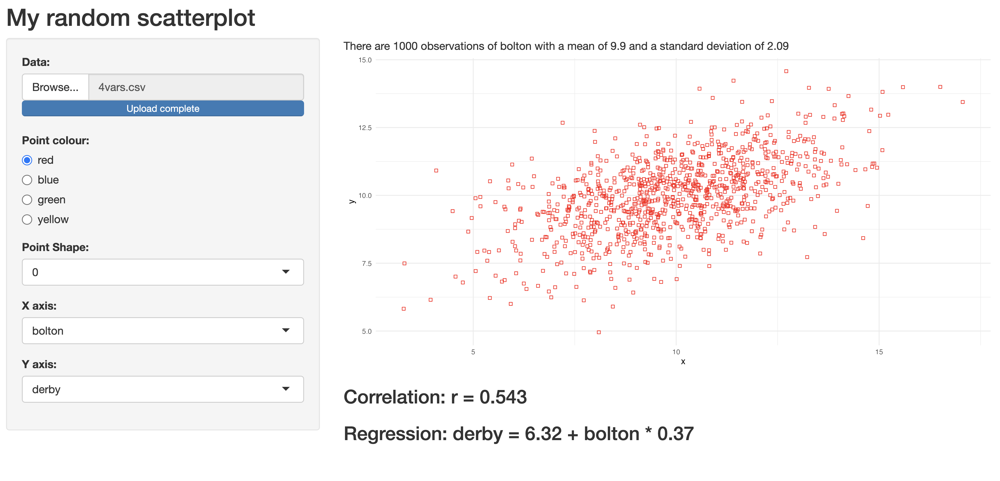

Updating inputs
The app would be more useful if it worked on any file with many variables instead of making up y values for a set of x values.
It is possible to create a selectInput object that lets the user choose the variables, using an updateSelectInput command.
Add two selectInput objects to the sidebarPanel, and comment out the numericInput (as we no longer will need it):
#numericInput("w","Weight for X:", min=0, max=1, step=.05, value=.5),
selectInput("xvar","X axis:",choices = "none"),
selectInput("yvar","Y axis:",choices = "none"),These will allow the user to select which variables to be used as X and Y, but to begin with the option list will just include the word “none”. The app will need to update these objects once a file has been supplied. To do this, add this object to the server code:
observe({
if(!is.null(input$file)){
d<-data()
updateSelectInput(inputId= "xvar", choices = variable.names(d))
updateSelectInput(inputId= "yvar", choices = variable.names(d))
}
})An observe object is like a reactive object but does not need to be called anywhere; it executes its code automatically when any inputs that it contains change. When a file is supplied to the app, this will read it, and change the choices of the xvar and yvar selectInput objects to be a list of the variable names in the file.
To make it work, a session parameter needs to be added to the server function, so that it becomes:
server <- function(input, output, session) {The app no longer needs to create y values, so in the server’s data function, comment out this line:
# data<-data|>mutate(y=makey(x,input$w))When the user has chosen an x and y variable, the app should select these from the data and use them to draw the scatterplot and compute the statistics.
Add a function to do this to the top of the file, underneath the makey definition:
getxy<-function(d,x,y){ d |> select(x=contains(x), y=contains(y)) }When this is called with a dataframe and two variables’ names, it will return a smaller dataframe with just the two variables whose names ‘contain’ the target names, renamed x and y.
Adding this line to the start of each output object will make it run on just the selected x and y variables:
data<-getxy(data(), input$xvar, input$yvar) The output$descriptives object currently just refers to X, so improve it by replacing X with the input$xvar value:
"observations of ",input$xvar," with a mean of",round(mean(data\$x),1),To test it, create a file with four columns, using this code in the console:
library(tidyverse)\# if it is not already loaded
d<-tibble(arsenal=rnorm(1000,10,2),
bolton=rnorm(1000,10,2),
chelsea=rnorm(1000,10,2),
derby=0.6*arsenal+0.4*bolton)
write_csv(d,"4vars.csv") The first three columns are random, but the fourth is made of \[ 0.6 * arsenal + 0.4 * chelsea. \]
If you run the app and give it the 4vars file, you should be able to choose the variables that correspond to x and y. The first three will all be unrelated, with minimal correlations, but when derby is the y variable, and arsenal is the x variable, the coefficient should be close to 0.6, and if bolton is the x variable, the coefficient should be close to 0.4
Notice also that the name of the x variable is reported in the descriptives text above the plot.

This is not just a shiny app now, it is a stats package! It should work on any CSV file that contains at least two numeric columns, though you will get errors if you choose a column that is not numeric. Give it a try.
# complete code, with unnecessary lines deleted
library(shiny)
library(tidyverse)
getxy<-function(d,x,y){ d |> select(x=contains(x), y=contains(y)) }
ui <- fluidPage(
titlePanel("My random scatterplot"),
sidebarLayout(
sidebarPanel(
fileInput("file","Data:"),
radioButtons("colour","Point colour:",c("red","blue","green","yellow")),
selectInput("shape","Point Shape:",choices = c(0:8)),
selectInput("xvar","X axis:",choices = "none"),
selectInput("yvar","Y axis:",choices = "none"),
),
mainPanel(
textOutput("descriptives"),
plotOutput("distPlot"),
htmlOutput("regression")
)
)
)
server <- function(input, output, session) {
observe({
if(!is.null(input$file)){
d<-data()
updateSelectInput(inputId= "xvar", choices = variable.names(d))
updateSelectInput(inputId= "yvar", choices = variable.names(d))
}
})
data<-reactive({
if(!is.null(input$file)){
file<-input$file
data<-read_csv(file$datapath)
}
})
output$distPlot <- renderPlot({
if(!is.null(input$file)){
data<-getxy(data(), input$xvar, input$yvar)
data |>ggplot((aes(x=x, y=y)))+
geom_point(colour=input$colour,shape=as.numeric(input$shape))+
theme_minimal()
}
})
output$descriptives <- renderText({
if(!is.null(input$file) ){
data<- getxy(data(), input$xvar, input$yvar)
paste("There are",nrow(data),
"observations of ",input$xvar," with a mean of",round(mean(data$x),1),
"and a standard deviation of",round(sd(data$x),2)
)
}
})
output$regression <- renderUI({
if(!is.null(input$file)){
data<- getxy(data(), input$xvar, input$yvar)
m<-lm(data=data, y ~ x)
r<-cor.test(data$x, data$y)
HTML(paste("<h3>Correlation: r = ",round(r$estimate,3),"</h3>",
"<h3>Regression: ",input$yvar," = ",round(m$coefficient[1],2),
" + ",input$xvar," * ",round(m$coefficient[2],2),"</h3>"))
}
})
}
shinyApp(ui = ui, server = server)